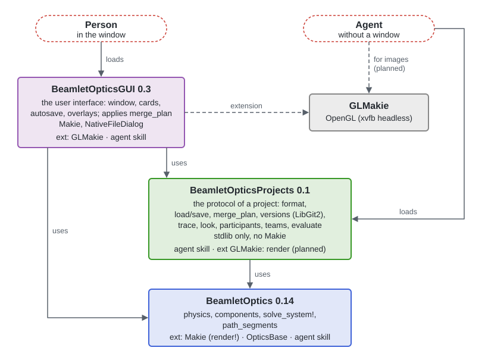

BeamletOpticsProjects.jl
Projects of BeamletOptics.jl: an optical setup saved as a folder that people open in BeamletOpticsGUI.jl and that coding agents edit at the same time. A project is data, no Julia environment: it opens from any environment that has the packages, and its project file records the versions it was saved with, which the GUI checks when it opens it.
The packages

BeamletOptics does the physics. BeamletOpticsProjects is the protocol of a project, the same for every participant: people and agents, with a window or without. BeamletOpticsGUI is the window on top of it. An agent needs no GUI: it works with BeamletOptics and BeamletOpticsProjects only. Each package ships its own agent skill (install_agent_skill()).
A project
Bench/
├── Bench.bmo the project file, which people open: the versions it was saved with
├── system.jl the setup: one line per component, source and system
├── src/Bench.jl own code of the project (functions, components)
├── view.toml how the GUI shows it (camera, layout)
├── AGENTS.md instructions for coding agents (CLAUDE.md points to it)
└── .bmo/ written by the open GUI, e.g. session-<person>.md (not versioned)system.jl is plain Julia, readable and writable by people and agents:
@component L1 = SphericalLens(0.05, -0.05, 0.005, 0.0254, ConstantRefractiveIndex(1.5)) pos = (0.0, 0.1, 0.0) label = "Collimator" uid = "…"
@component D1 = Detector(0.02) pos = (0.0, 0.3, 0.0) uid = "…"
@source B1 = Beam([0.0, 0.0, 0.0], [0.0, 1.0, 0.0], 1.0e-6) uid = "…"
@system S1 = [L1, D1] sources = [B1] uid = "…"L1 is the readable id, label the name people see, uid the machine id that the GUI keeps across renames.
Use
using BeamletOptics, BeamletOpticsProjects
p = new_project("Bench") # the folder, its files and the first version
p = load_project("Bench") # or "Bench/Bench.bmo"
p[:L1] # the objects, by id
save_project(p) # writes system.jl; throws ProjectChanged if the files changed meanwhile
save_version("Bench") # a version (a git commit via libgit2, no git install needed)
versions("Bench")
check_versions("Bench") # the versions of Bench.bmo against those of this environmentIn the GUI, open_project("Bench/Bench.bmo") opens it; the window saves every action to the files and merges what an agent changes, live.